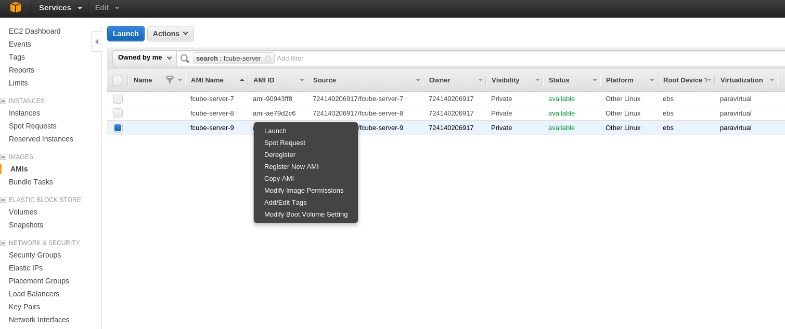
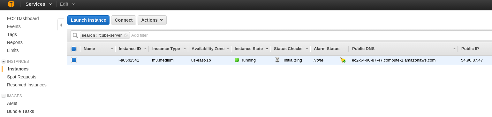
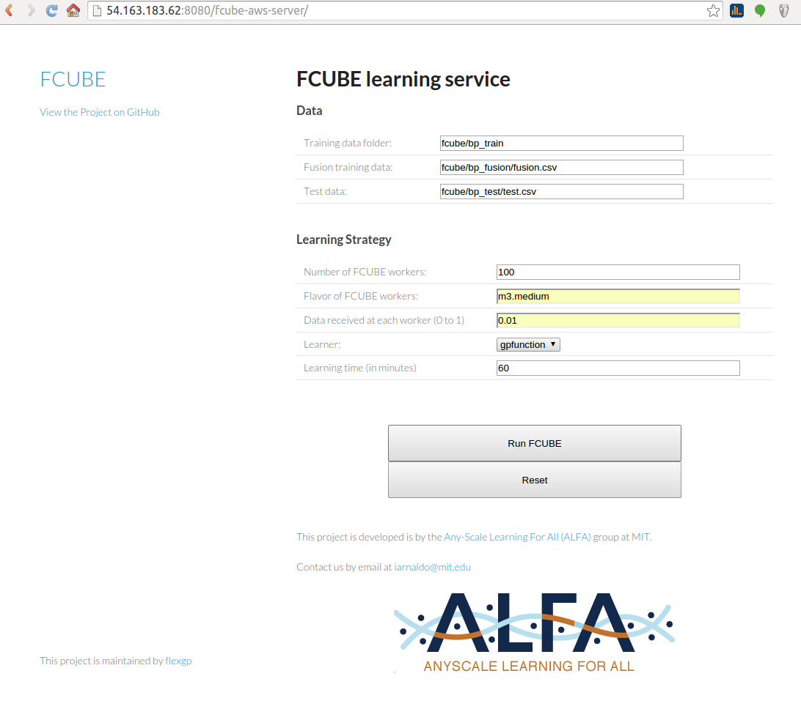
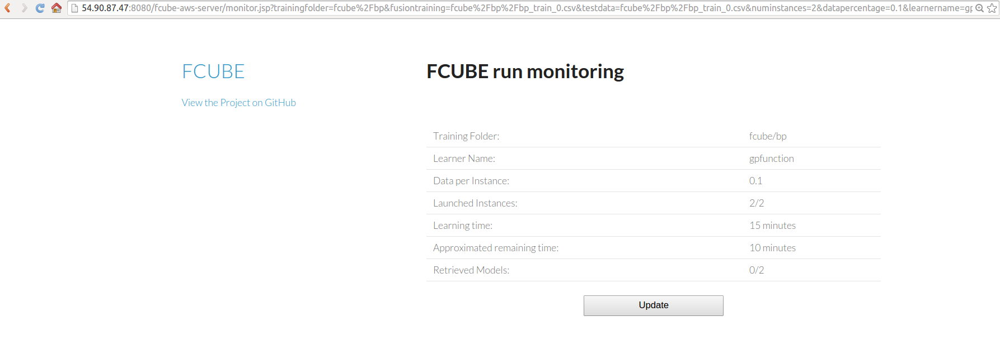
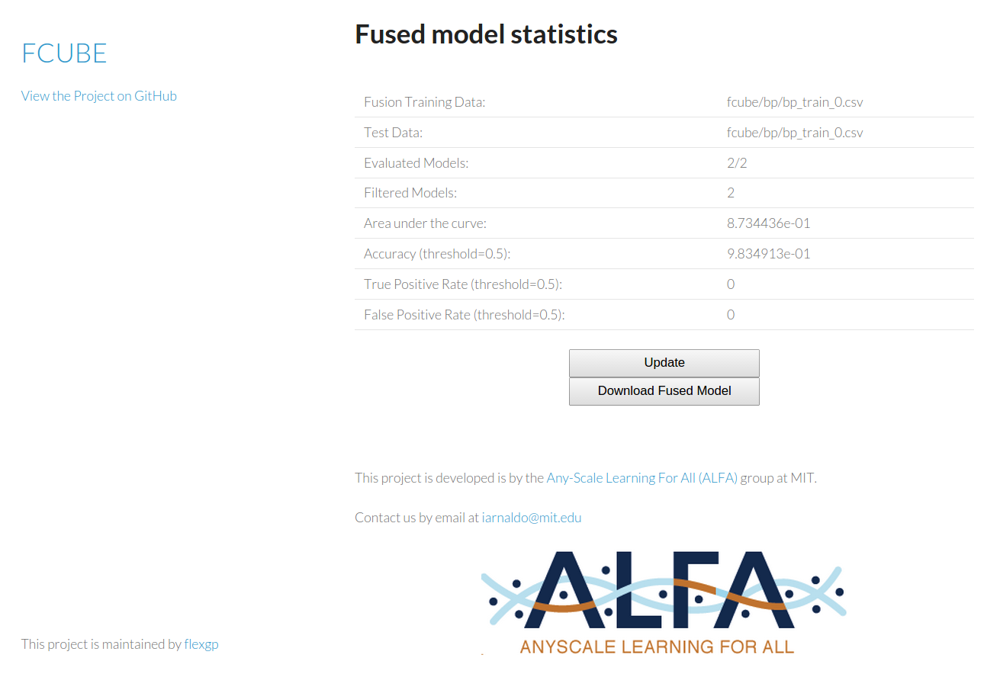

FCUBE
How to run FCUBE
We provide a web interface to exploit the most common use case of FCUBE. A preconfigured image released on Amazon EC2 contains all the code necessary to run FCUBE. To instantiate such image, the following steps are required.
WARNING: DO NOT FORGET TO TERMINATE THE INSTANCES AT THE END OF THE FCUBE RUN
Step 1: Log into Amazon Web Services
Access your AWS account from aws.amazon.com

Step 2: launch an FCUBE server
From the Amazon EC2 console, launch an instance of the fcube-server image. The image name is:
fcube-server-10 and the AMI is ami-941e78fc.
Make sure that the port 8080 is open.

From the Amazon EC2 console, check the public IP assigned to the FCUBE server:

Step 3: secure copy the AWS keys to the server
Send the file credentials.csv to the FCUBE server.
$ scp -i path_to_your_keypair.pem path_to_credentials.csv ec2-user@assigned_ip:~
Note: the file credentials.csv contains an access key and a secret key and can only be downloaded from aws.amazon.com when the keys are first generated.
Log into the instance and copy the credentials to the tomcat folder:
$ ssh -i path_to_your_keypair.pem ec2-user@assigned_ip
[ec2-user@private_ip ~]$ sudo cp credentials.csv /usr/share/tomcat7/certs/ ; sudo chown tomcat /usr/share/tomcat7/certs/credentials.csv
Step 4: access the FCUBE server's web interface
Access the launched image with your web browser. The url is http://assigned_ip:8080/fcube-aws-server/
The following fields of the form need to be filled:
- Training data folder: the path to the S3 bucket and folder containing the training splits.
- Fusion training data: the path of the data split used for fusion training
- Test data: the data split used for testing
- Number of FCUBE workers
- Flavor of FCUBE workers (check the available EC2 instance flavors)
- Data received at each instance (0 to 1): fraction of the randomly selected split used for learning (1 stands for the whole split)
- Learner: select one of the available learners
- Learning time (in minutes)
Once the form has been filled, just click on "Run FCUBE"!

Step 5: learning the models
After clicking on "Run FCUBE", a new page allows to monitor the run:

Step 6: model fusion
Once all the models have been retrieved, click on "Fuse Models". You will be able to monitor the model fusion process, and to download the fused model.

WARNING: DO NOT FORGET TO TERMINATE THE INSTANCES AT THE END OF THE FCUBE RUN